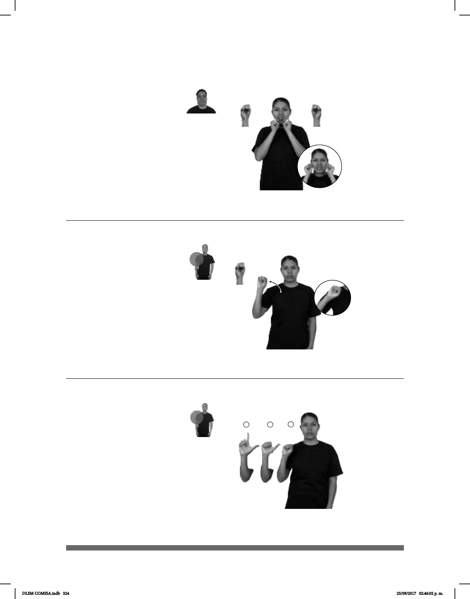

324
Seña: SS
S.1
Palmas hacia afuera.
De las comisuras de la
boca a las mejillas.
Las manos se mue-
ven formando un arco.
Se esboza
una sonrisa.
Simula la sonrisa
representativa de la marca.
Empresa mexicana
subsidiaria de PepsiCo, que opera
en el mercado de botanas y
alimentos.
®
(S-91)
LUGAR FABRICA SABRITAS HAY TRABAJO PARA PERSONAS
En la fábrica de Sabritas buscan personal para trabajar.
(S-92)
Seña: SM
S.1
Palma hacia afuera.
A la altura del hombro.
La mano se agita.
Simula la acción de
agregar sal a algo con un salero.
sust. f. Sustancia mineral
blanca, cristalina, muy soluble en agua,
que se encuentra en el agua del mar,
en minas, manantiales, etc, importante
para la vida, muy usada para condimen-
tar o conservar alimentos.
COMIDA FALTA SAL POQUITO
A la comida le faltó un poco de sal.
Seña: SM
Seña que inicia en
S.1, pasa a A.1 y termina en L.1
Palma hacia afuera.
A la altura del hombro.
sust. f. Sustancia
mineral blanca, cristalina, muy
soluble en agua, que se encuentra en el
agua del mar, en minas,
manantiales, etc, importante para la
vida, muy usada para condimentar
o conservar alimentos.
(S-93)
#SAL MUCHA CUERPO MAL pro-TÚ DEBER CUIDADO
Mucha sal ocasiona mala salud, debes cuidarte.
DLSM COMISA.indb 324 25/09/2017 02:46:02 p. m.